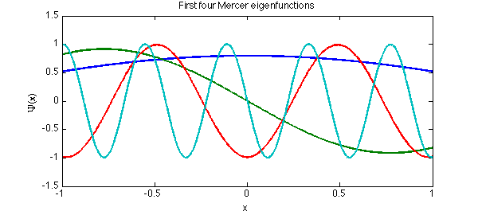
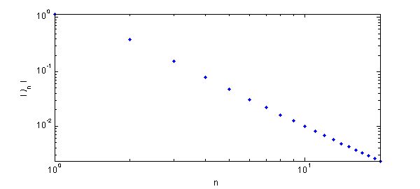
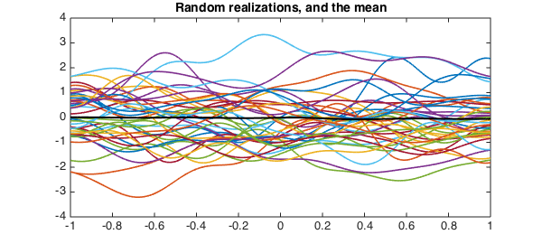
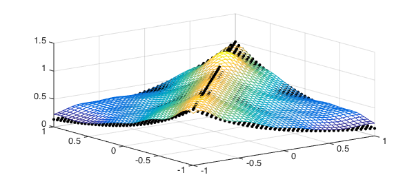
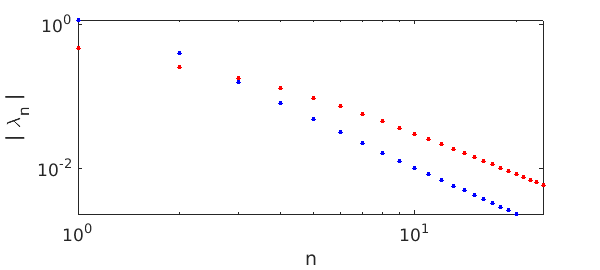

plotopt = {'linewidth',2,'markersize',12};
Mercer's theorem is a continuous analog of the singular-value or eigenvalue decomposition of a symmetric positive definite matrix. One of its main applications is to find convenient ways to express stochastic processes, via the Karhunen-Loeve expansion [1].
Mercer's theorem
Suppose $K(s,t)$ is a symmetric (that is, $K(t,s)=K(s,t)$), continuous, and nonnegative definite kernel function on $[a,b]\times [a,b]$. Mercer's theorem asserts that there is an orthonormal set of eigenfunctions $\psi_j(x)$ and eigenvalues $\lambda_j$ such that
$$ K(s,t) = \sum_j^\infty \lambda_j \psi_j(s) \psi_j(t), $$
where the values and functions satisfy the integral eigenvalue equation
$$ \lambda_j \psi_j(s) = \int_a^b K(s,t) \psi_j(t). $$
For example, suppose we have an exponentially decaying kernel:
K = @(s,t) exp(-abs(s-t));
We can create the integral operator and find the leading terms of its Mercer decomposition numerically.
F = fred( K, domain([-1,1]) );
[Psi,Lambda] = eigs(F,20,'lm');
Psi = Psi{1};
[lambda,idx] = sort(diag(Lambda),'descend');
Psi = Psi(:,idx);
plot(Psi(:,[1 2 5 10]),plotopt{:})
title('First four Mercer eigenfunctions')
xlabel('x')
ylabel('\Psi(x)')

The eigenfunctions returned by eigs are orthonormal.
format short Psi(:,1:6)'*Psi(:,1:6)
ans =
1.0000 -0.0000 0.0000 -0.0000 0.0000 -0.0000
-0.0000 1.0000 -0.0000 0.0000 0.0000 -0.0000
0.0000 -0.0000 1.0000 -0.0000 -0.0000 0.0000
0.0000 0.0000 -0.0000 1.0000 0.0000 0.0000
0.0000 -0.0000 -0.0000 0.0000 1.0000 0.0000
-0.0000 -0.0000 0.0000 0.0000 -0.0000 1.0000
The truncation of the Mercer sum does lead to an underestimate of the values of the kernel $K(s,t)$. For our example, we should get $K(s,s)=1$, but we get noticeably less.
Psi(0,:)*diag(lambda)*Psi(0,:)' Psi(0.95,:)*diag(lambda)*Psi(0.95,:)'
ans =
0.9799
ans =
0.9825
In fact, the eigenvalues decrease only like $O(n^{-2})$, which makes the pointwise convergence in the number of terms rather slow.
loglog(lambda,'.',plotopt{:}), axis tight
xlabel('n')
ylabel('| \lambda_n |')

Karhunen-Loeve expansion
Now suppose that $X(t,\omega)$ is a stochastic process for $t$ in some interval $[a,b]$ and $\omega$ in some probability space. The process is often characterized by its mean, $\mu(t)$, and its covariance, $K(s,t)$, the expected value of $(X(s)-\mu(s))(X(t)-\mu(t))$. Using Mercer's theorem on $K$, we can express the process by the K-L expansion
$$ X(t,\omega) = \mu(t) + \sum_j^\infty \sqrt(\lambda_j) \psi_j(t) Z_j(\omega), $$
where $\lambda_j$ and $\psi_j$ are Mercer eigenmodes for $K$, and the $Z_j$ are uncorrelated and of unit variance.
K-L is a generalization of the singular value decomposition of a matrix, which can be written as a sum of outer products of vectors. The covariance $K$ plays the role of the Gram matrix inner products (in probability) of "columns" of the process for different values of $s$ and $t$. A number of SVD results have K-L analogs, most notably that the best approximation of the process results from truncating the expansion, if the eigenvalues are arranged in nonincreasing order.
Because the $Z_j$ in the expansion are uncorrelated, the variance of $X$ is just the sum of the eigenvalues. This is the trace of $K$, which is the integral of $K(s,s)$; in this case, the result is $2$. But we can also calculate the variance in a truncation of the expansion by summing only some of the eigenvalues. For example, suppose the process $X$ has the exponential covariance in $K$ above. The eigenvalues show that $95\%$ of the variance in the process is captured by the first $10$ K-L modes:
captured = sum(lambda(1:10)) / 2
captured =
0.9579
We can find realizations of $X$ by selecting the random parameters $Z_j$ in the expansion.
Z = randn(10,400);
L = diag( sqrt(lambda(1:10)) );
X = Psi(:,1:10)*(L*Z);
plot(X(:,1:40))
mu = sum(X,2)/400;
hold on, plot(mu,'k',plotopt{:})
title('Random realizations, and the mean')

We should get roughly the original covariance function back. (We'll discretize the computation for speed.)
points = (-1:.05:1)';
[S,T] = meshgrid(points);
C = cov( X(points,:)' ); % covariance at discrete locations
clf, mesh(S,T,C)
hold on, plot3(S,T,K(S,T),'k.',plotopt{:})

If we shorten the correlation length of the process relative to the domain (i.e., more randomness), the amount of variance captured by the first $10$ modes will decrease.
K = @(s,t) exp(-4*abs(s-t)); % decrease correlation faster, then... F = fred( K, domain([-1,1]) ); lambdaShort = sort( eigs(F,24,'lm'), 'descend' );
clf
loglog(lambda,'b.',plotopt{:})
hold on
loglog(lambdaShort,'r.',plotopt{:}), axis tight
xlabel('n')
ylabel('| \lambda_n |')
captured = sum(lambdaShort(1:10)) / 2 % ... a smaller fraction is captured
captured =
0.6744

References
- D. Xu, Numerical Methods for Stochastic Computations, Princeton University Press, 2010.